CMU CS DB Andy Pavlo 교수님의 "Intro. to Database Systems" 강의를 필기한 내용입니다.
본 글의 그림들은 별도의 명시가 없는 한 해당 강의 자료에서 가져왔습니다.
다소 잘못된 내용과 구어적 표현 이 포함되어 있을 수 있습니다.
Database, DBMS
- Database 는 현실 세계의 특정 부분을 반영하는 연관된 데이터들이 정리 정돈된 덩어리이다.
- 가령 대학교의 DB 는 현실세계에서 학생이 듣는 과목에 대한 것을 “학생” 정보와 “개설 과목” 정보와, 이들의 “관계” 를 저장하는 식으로 구성할 수 있다.
- Database System (혹은 Database Management System, DBMS) 은 이런 Database 를 관리하는 소프트웨어이다.
Raw CSV-DB approach
- 그냥 CSV (Comma-Separated Value) 형태로 데이터를 저장하고 사용한다면 어떤 일이 벌어질가?

- 그리고 이런 방식으로 원하는 정보를 추출한다면?

- 이때 고려할 점들은 다음과 같다:
- 우선 데이터의 integrity 와 관련해서는:
- 데이터 중복을 막아야 한다.
- 즉,
Artist에"GZA"와"gza"가 모두 들어가거나,"GZA"가 두개 들어가는 경우 등.
- 즉,
- 자료형에 대한 규제를 해야 한다
- 정수값을 가져야 하는
year항목에 문자열이나 이메일이 들어가는 등의 상황을 막아야 한다. - 아니면 뭐 값이 가질 수 있는 범위나 그런 메타데이터 정보
- 정수값을 가져야 하는
- 실생활에서의 한 Album 에 여러 Artist 가 참여한 경우를 반영할 수 있도록 해야 한다.
- 한 Artist 를 지우면 해당 Artist 의 Album 를 선형탐색하며 지워야 한다.
- 데이터 중복을 막아야 한다.
- 이 CSV-DB 를 사용하는 application 을 구현하는 입장에서:
- 탐색이 너무 오래걸린다; 을 감당해야 한다는 것..
- Application process 가 다른 머신에서 작동한다면?
- 여러 process/thread 가 하나의 DB 에 접근한다면 이때의 concurrency 는 어떻게 처리할까?
- CSV-DB 의 가용성 측면에서는:
- 만약 application 이 이 DB 를 사용하다가 꺼져버린다면 어떻게 이것을 복구할 수 있을까?
- 이 DB 를 HA 를 위해서 replication 을 하고자 한다면 어떻게 해야 할 까?
- 우선 데이터의 integrity 와 관련해서는:
- 이러한 문제들을 모든 application 에서 처리하는 것보다는, 처리해주는 “누군가” 가 있으면 더욱 좋을 것이다. 그놈이 DBMS 인 것.
Data Model, Schema
옮겨짐: Data Model, Schema
- 위에서 말한 것처럼, DBMS 는 데이터의 덩어리일 뿐인 DB 를 application 에서 사용할 수 있게 해주는 역할을 한다.
- 이때 Data Model 은 이 데이터 덩어리를 사용하는 방법론이라고 생각하면 된다.
- 이렇게 말하면 잘 감이 안올 수 있는데, 간단히 말하면 자료구조라고 비유할 수 있다.
- 아래의 Data Model 예시를 보면 딱 알 수 있을 것.
- Relational: 제일 일반적인 그거
- Key-value, Document, XML, Object 등: No-SQL 로도 불린다
- Array, Matrix, Vector: ML 쪽에서 사용된다고 하네
- Schema 는 이 Data Model 에 따라 “정의”한 데이터 덩어리를 뜻한다.
- 이 “정의” 라는 것은 DB 의 메타데이터를 정하는 것,
- 아니면 더 쉽게 엑셀로 생각하면 Table 의 header row 를 정하는 것이라 생각하면 된다.
- 이 강의에서는 Relational Data Model 에 집중한다고 한다.
Relational Data Model
- 초기의 DBMS 의 경우에는 Logical layer (가령 Schema 같은) 와 Physical layer (실제 구현) 간에 너무 coupling 이 심했다고 한다.
- 그래서 schema 가 변경되면 DBMS 코드를 수정해야 하는 문제가 있었다.
- 물론 근데 이것은 인간의 노동력이 컴퓨터보다 더 쌌기 때문에 이런 단순 반복 작업이 가능했던 것.
- 이것을 본 IBM 의 Ted Codd 란 수학자가 생각해낸 것이:
- 현실 세계를 반영할 수 있는 global 한 “model” 을 만들고, 이 “model” 을 DBMS 에서 구현하면
- “model” 을 따르는 “schema” 에 대해서는 DBMS 의 수정 없이 편하게 수정할 수 있지 않을까 라고 생각해서
- 만든 것이 이 Relational Data Model 이다.
- Relational Data Model 은 이름 그대로 정보들 간의 “관계” 를 이용해 현실세계를 추상화 하는 방법이고, 아래의 세 핵심 아이디어 (tenet) 를 가진다고 한다:
- 첫째는 DB 를 “Relation” 이라는 자료구조를 통해 저장한다는 것이고,
- 둘때는 physical storage 는 DBMS 구현에 맡긴다는 것이며,
- 즉, 실제로 데이터를 저장하는 것은 B+ tree 를 사용하던, hash tree 를 사용하던 상관없다는 것이다.
- 셋째는 Relational Model 에서는 data access 를 위한 high-level language 만을 제공하고, 이것의 실제 처리 방법 또한 DBMS 에 맡긴다는 것이다.
- Relational model 에서는 원하는 결과를 얻을 수 있는 “수학적인 연산자” 형태의 high-level language 를 제시한다.
- 그리고 그 연산을 어떻게 처리할지는 DBMS 가 알아서 하고 model 에서는 신경쓰지 않음
- 하지만 뒤에서도 말하겠지만 이것이 declarative language 를 제시했다는 얘기는 아니다.
- 그리고 다음의 세 가지 정도로 구성된다고 한다.
- Structure: DB 의 relation 과 내용물 등을 정의하기 위한 방법
- Integrity: DB 를 일관된 상태로 유지하기 위한 Constraint
- Manipulation: DB 에 접근하여 조회 및 수정하기 위한 API
Structure
옮겨짐: Relation
Relation (Table)
- Relation 은 현실 세계의 어떤 대상의 여러 특징들 간의 관계를 모은 집합이다.
- 일단 위의 정의는 들으면 고구마를 먹은 듯이 숨이 턱 막히게 이해가 안된다.
- 간단하게 생각하면 Relation 은 그냥 Table 이라고 이해해도 된다.
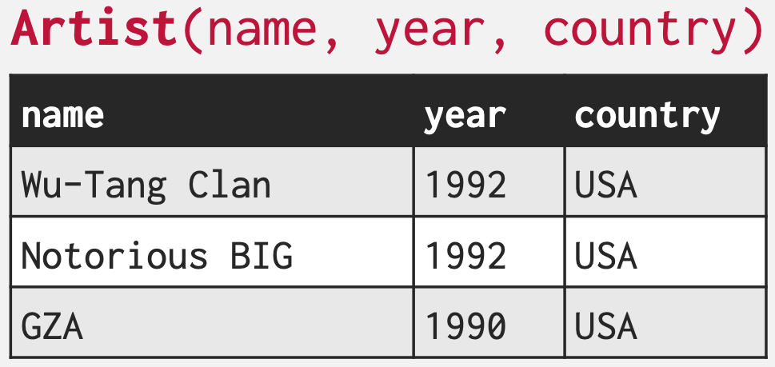
- 위 table 을 이용해 저 정의를 이해해 보자.
- “여러 특징들” 이라는 것은 “name”, “year”, “country” 이다.
- 그리고 “관계” 라는 것은 저 특징들이 하나의 “현실 세계의 어떤 대상” 를 대변하고 있다는 거라고 생각하면 된다.
- 즉, 현실 세계에서 tearz 를 부른 형들은
name="Wu-Tang Clan",year=1992,country="USA"라는 특징들을 가지고 있다고 생각할 수 있다. - 이것을 반대로 생각해 보면 이 특징들 사이에는 현실세계의 우탱클랜 하나를 설명해준다는 “관계” 가 있는 것.
- 그리고 이 “관계” 들을 모은 것이 Relation, 즉 Table 인 것이다.
- 그래서 n-ary relation 이라는 것은 table w/ n column 이라는 말과 같다.
Tuple
- 그리고 얘는 그냥 위 table 에서의 한 row 이다.
- “한 대상의 특징을 나타내는 값들의 집합” 이라고 정의되지만, 그냥 table 에서의 row 라고 이해해도 된다.
- 하나의 값은 Domain 이라고도 불리고,
NULL은 (허용되는 한) 모든 attribute 의 domain 이 될 수 있다. - Tuple 은 Record, Row 와 동일하다고 생각해도 된다.
Integrity
Private Key
옮겨짐: Private Key, PK
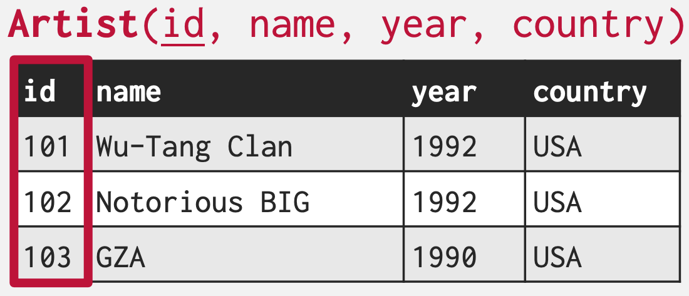
- Primary Key (PK) 는 알다시피 relation 내에서 tuple 을 고유하게 식별해주는 ID 이다.
- 보통 name 과 같은 attribute 를 사용하기 보다는 별도의 attribute 를 임의로 만들어서 사용하게 된다.
- 많은 DBMS 에서는 이 PK 를 자동 생성해 주는 기능을 갖고 있어 사용자가 신경쓰지 않아도 자동으로 중복되지 않는 PK 를 생성해 주게 된다.
- SQL 표준에서는
IDENTITY - PostgreSQL 이나 PL-SQL (Oracle) 에서는
SEQUENCE - MySQL 에서는
AUTO_INCREMENT와 같은 애들이 이런 기능을 제공해 준다
- SQL 표준에서는
Foreign Key
옮겨짐: Foreign Key, FK
- Foreign Key (FK) 도 알다시피 다른 relation 의 PK 를 명시하여 해당 tuple 를 가리키는 포인터 를 말한다.
- 다만 이때 한 relation 에 FK 를 직접 박지는 않는다.
- 물론 1:1 관계라면 relation 의 attibute 로 FK 를 직접 박아도 되지만
- 이때는 아마 이렇게 하는 것보다 relation 을 합치는게 나을듯?
- 정규화에 이런 내용이 있었던 것 같은데 기억이 잘 안난다
- 물론 1:1 관계라면 relation 의 attibute 로 FK 를 직접 박아도 되지만
- 한 relation 에 FK 를 직접 박으면 아래처럼 1:N 이나 N:M 을 표현하기 힘들다.
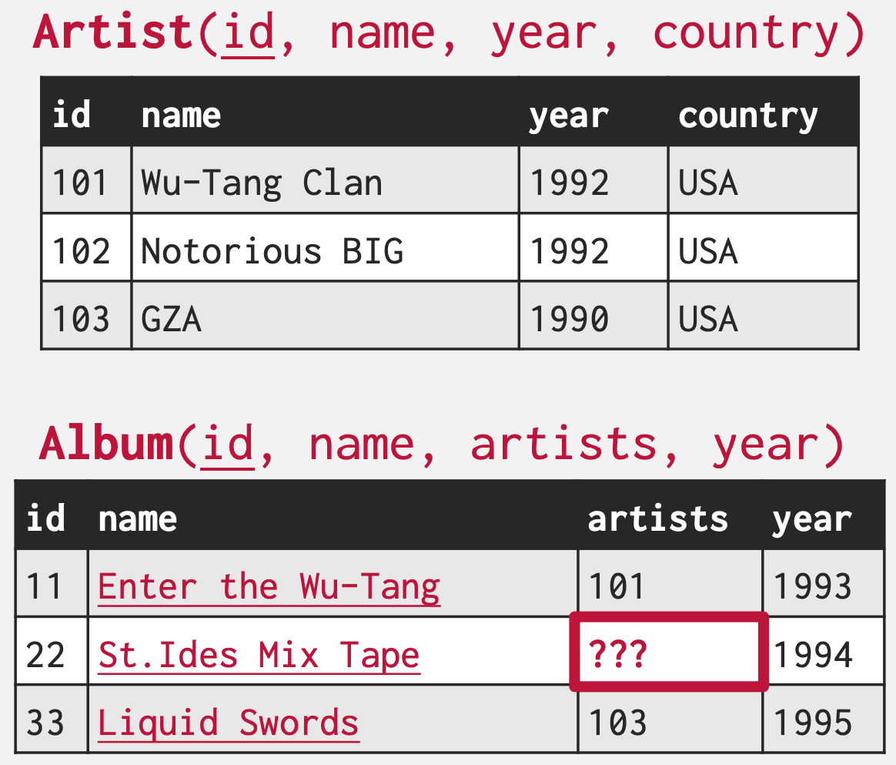
- 이때 array attribute 를 사용할 수도 있긴 하지만, 일반적으로 아래처럼 Cross-reference table 을 구성하는 것이 바람직하다고 한다.
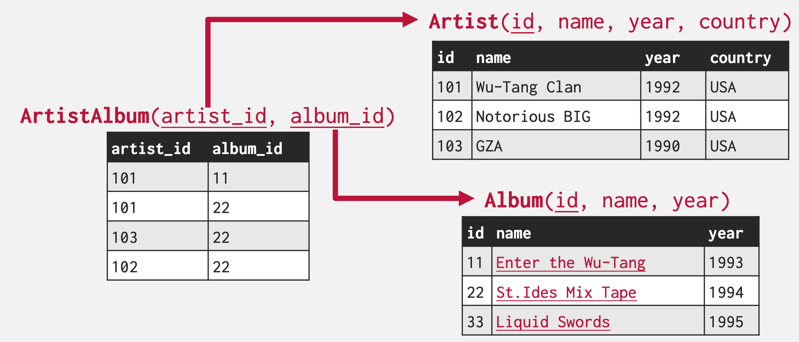
- Array attribute 를 사용하지 않는 이유는 아마도:
- Array attribute 를 지원하지 않는 DB 도 있기 때문
- Array attribute 의 type 은 int 와 같은 일반 적인 type 이기 때문에, 해당 PK 가 실제로 존재하는가에 대한 검증은 이루어지지 않기 때문
- 그리고 생각해 보면 (위의 예제에서) Artist 에 array attribute 를 추가해서 하나의 Artist 에 대해 연관된 Album 들을 저장하고 Album 에도 array attribute 를 추가해서 하나의 Album 에 대해 연관된 Artist 들을 저장하게끔 해야 할 것 같은데 그럼 결국에는 별도의 cross reference table 을 사용하는 것에 비해 용량을 적게 사용할 것 같지도 않다
JOIN연산에도 강점이 있을까? 생각해 보면 솔직히 잘 모르겠음
- 그리고 뭐 추가적으로:
- 저 Cross reference table 은 그냥 하나의 table 이고 다른 table 들 처럼
INSERT와 같은 연산이 충분히 가능하다
- 저 Cross reference table 은 그냥 하나의 table 이고 다른 table 들 처럼
Manipulation: DML (Data Manipulation Language)
- 여기에는 두가지 방법이 있다:
- Procedural: 이것은 어떤 데이터를 접근하는 것을 “절차” 적으로 명시하는 것을 의미한다.
- 이 Procedural 한 방법에는 Relational Algebra 가 포함된다.
- 위에서 말한 것처럼, Relational model 이 제시하는 high-level language 는 declarative 하지는 않다.
- 수학에서도 곱하기가 더하기보다 먼저 수행되는 것과 마찬가지의 “순서” 가 존재한다는 것.
- Non-procedural (Declarative): 이것은 진짜로 데이터를 접근하는 것에 대한 “우리가 받기를 예상하는 결과” 를 명시하는 것이다.
- 이 방법에는 Relational Calculus 가 있으며
- 내부적으로 들어가면 여러가지 많은 최적화가 들어가기 때문에 어렵고, 이번 강의에서는 자세히는 안배우는 듯
- 일반적인 SQL 이 여기에 해당한다고 한다.
- Procedural: 이것은 어떤 데이터를 접근하는 것을 “절차” 적으로 명시하는 것을 의미한다.
Relational Algebra
- 위에서도 말한 것 처럼 relation 은 “집합 (Set)” 이고,
- 이에 반해 SQL 의 table 은 “가방 (Bag)” 이라고 할 수 있다.
- “집합 (Set)” 은 중복이 없는 순서 없는 모음
- “가방 (Bag)” 은 중복이 허용되는 순서 없는 모음
- 즉, Relational algebra 에서는 중복이 허용되지 않지만, SQL 에서는 허용될 수 있다고 한다.
- 이에 반해 SQL 의 table 은 “가방 (Bag)” 이라고 할 수 있다.
Duplicates in Relation
- Fall 2022 강의 에서는 반대로 Relation 에는 중복이 허용되고, SQL 에서는 허용되지 않는다고 하는데, 이건 잘못된 설명인 듯 하다.
- 다음년도 강의에서는 중복이 허용되지 않는 것으로 설명하기도 하고 찾아보면 Relational algebra 는 Set 에 대해 다룬다고 한다.
- Relational algebra 에서는 이 집합의 각 tuple 들을 handling 하는 7개의 기본적인 연산을 제시한다.
- : Select 연산
- : Projection 연산
- : Union 연산
- : Intersection 연산
- : Difference 연산
- : Product 연산
- : Join 연산
- 이들은 모두 1 혹은 2개의 relation 을 input 으로 받고 1개의 relation 을 output 으로 반환한다.
- 참고로 2개의 relation 을 input 으로 하는 경우에는 두 input 의 scheme 이 동일해야 한다.
- 이 연산들을 연결연결 해서 우리가 원하는 결과를 도출해 낼 수 있다.
- 이제 이것들을 하나하나 살펴보자고
Select ()
- 기본 형태는 위와 같다.
- 여기서 라는 것은 “조건문 (condition)” 혹은 “필터 (filter)” 로 생각하면 된다.
- 이 은 일반 조건문처럼 AND (
&&) 나 OR (||) 를 사용하여 더욱 복잡한 조건을 달 수도 있다.
- 이 은 일반 조건문처럼 AND (
- 즉, relation 에서 저 를 만족하는 tuple 들을 “골라 (select)” 내라는 연산자인 것.
- 여기서 라는 것은 “조건문 (condition)” 혹은 “필터 (filter)” 로 생각하면 된다.
AND 와 OR 의 수학적 표현
- AND 연산은 수학적으로는 Conjunction 으로 말하기도 하고, 기호는 를 사용한다.
- OR 연산은 수학적으로는 Disjunction 으로 말하기도 하고, 기호는 를 사용한다.
- 이것을 SQL 로 표현해 보면 아래와 동일하다:
SELECT * FROM R
WHERE {{ predicate }};Relational algebra 와 SQL
- 여기서는 이해를 위해 Relational algebra 를 대응되는 SQL 로 보여주고 있지만, Relational algebra 와 SQL 은 엄연히 다르다.
- Relational algebra 는 수식이고, SQL 는 언어이며
- Relational algebra 는 procedural 하고, SQL 는 declarative 하다.
- Relational algebra 에서의 Select 와 SQL 에서의
SELECT는 다르다는 것을 명심하자.
- 쉬운 연산이라 뭐 설명할게 없다; 아래 예시 보고 넘어가자
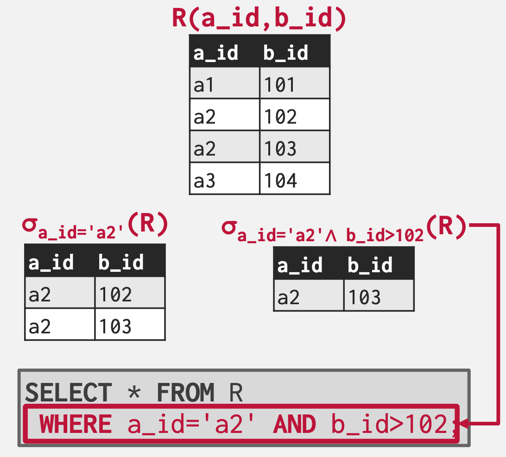
Projection ()
- Select 가 row 를 골라내는 것이었다면, Projection 은 column 을 골라내는 것이다.
- 즉, 이것은 SQL 로 나타내 보면 다음과 같다:
SELECT {{ attributes }} FROM R;- 이것을 이용해 domain 들을 변형하거나, attribute 순서를 바꿔서 받아오는 것이 가능하다.
- 이것도 뭐 별로 어려울 것은 없다; 아래 예시를 보자.
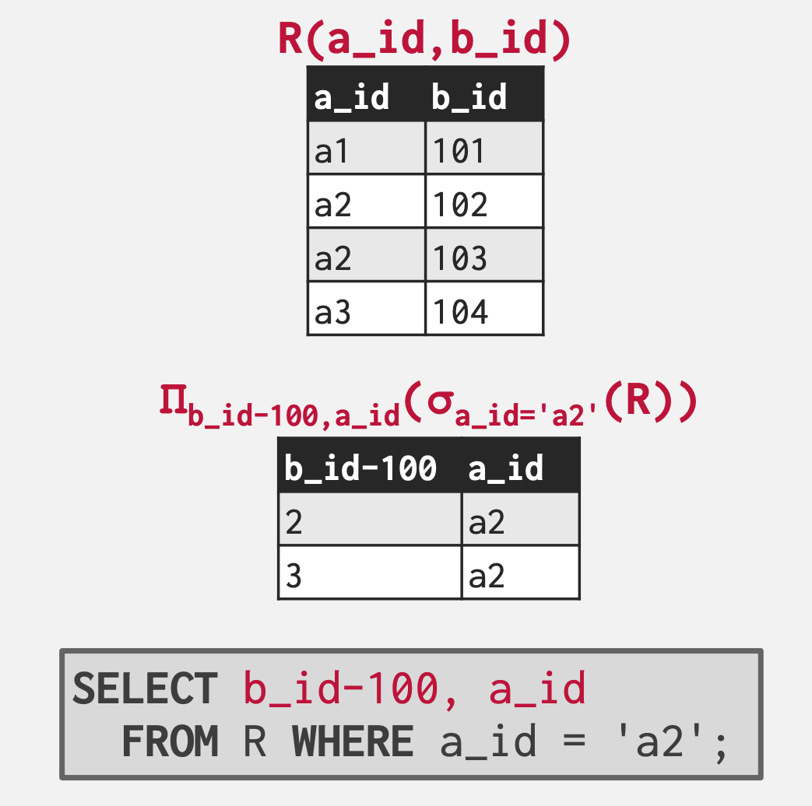
Union ()
- 집합 이론에서의 그 “합집합” 이다.
- SQL 에서는
UNION으로 표현된다.
(SELECT * FROM R)
UNION
(SELECT * FROM S);- 참고로, SQL 의
UNION은 보통 중복을 제거하지만,UNION ALL이라는 SQL 에서 중복을 허용하는 연산도 있다고 한다. - 아래는 예시
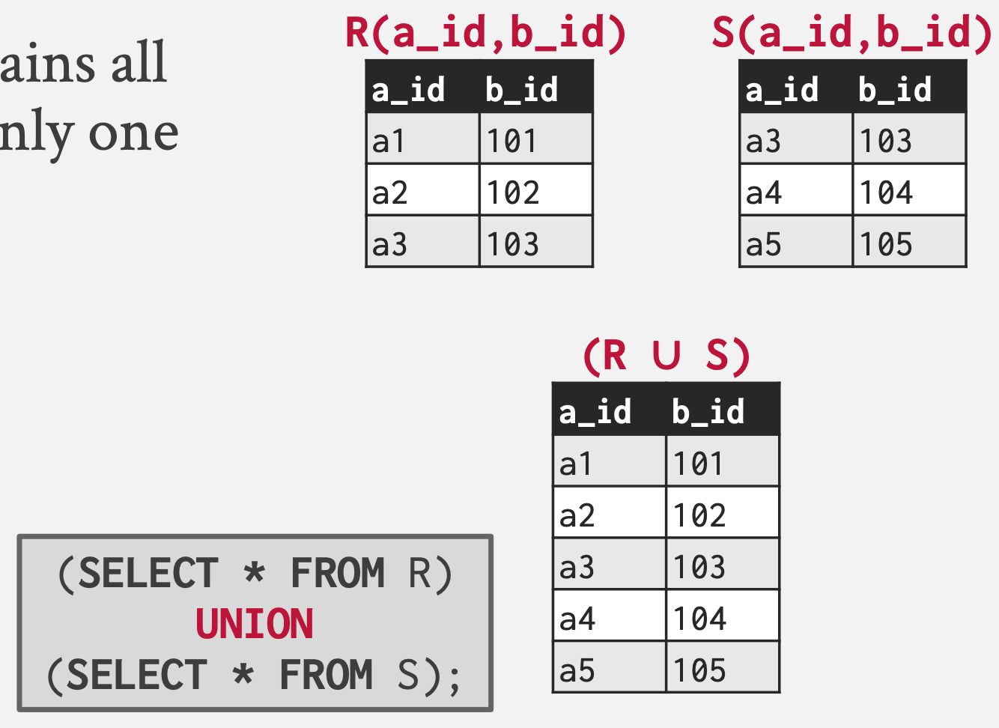
Intersection ()
- 이것도 그냥 집합 이론에서의 교집합이다.
- SQL 에서는
INTERSECT로 표현된다.
(SELECT * FROM R)
INTERSECT
(SELECT * FROM S);- 예시
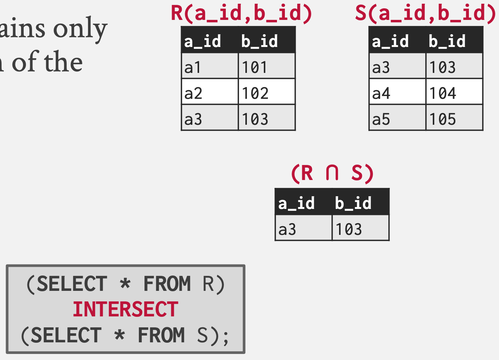
Difference ()
- 마찬가지로 집합이론에서의 그것과 동일하다.
- SQL 에서는
EXCEPT로 표현된다.
(SELECT * FROM R)
EXCEPT
(SELECT * FROM S);- 예시 보고 빠르게 넘어가자
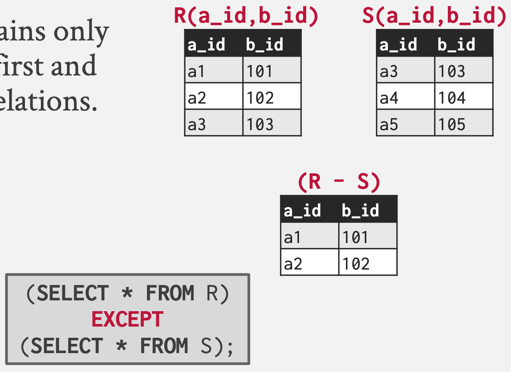
Product ()
- 여기서의 Product 는 Cartesian Product 를 일컫는다.
- 즉, 모든 가능한 조합의 모음을 반환한다.
- 아래 예시 보면 된다:
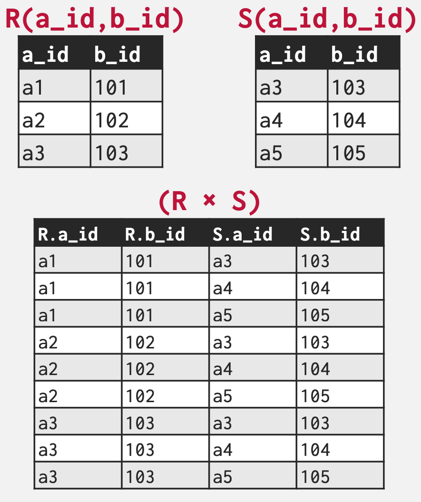
- 그리고 SQL 에서는
CROSS JOIN으로 표현된다.
SELECT * FROM R CROSS JOIN S;
/* 혹은 */
SELECT * FROM R, S;- 사실 이 Product 연산은 실제로는 사용할 일이 별로 없고, 디버깅이나 테스트 용도로만 사용된다.
- 다만 이 연산은 Join 연산의 building block 이라는 점에서 중요하다.
Join ()
- SQL 로는
NATURAL JOIN이 대응된다.
SELECT * FROM R NATURAL JOIN S;- Join 은 두 relation 에서 어떤 attribute 에 대해 동일한 domain 을 갖는 tuple 들을 모은 것이다.
- 이렇게 말하면 Intersection 과 뭔차이인지 헷갈릴 수 있는데, 둘 간의 차이점은
- Intersection 에서는 두 relation 의 scheme 가 동일해야 하지만, Join 에서는 그렇지 않다.
- 즉, Join 에서는 두 relation 의 공통된 attribute 에 대해서만 domain 을 비교하고, 그렇지 않은 attribute 에 대해서는 무시한다.
- Join 의 연산 과정을 보면 좀 더 차이점을 명확하게 이해할 수 있다.
- 일단 두 relation 을 Product 한 후,
- 두 relation 에 공통으로 포함된 attribute 들에 대해서만 domain 을 비교해 같은 애들을 고른다.
- 그리고 그 공통 attribute 의 domain 대해서는 결과에서 빼버리면 완성된다.
- 즉 아래 그림과 같다:
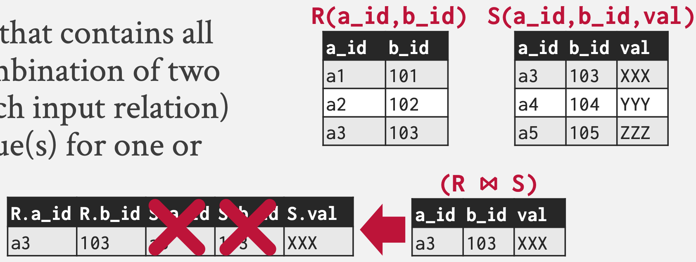
- 위의 예시는
NATURAL JOIN이외에도 다른 방법을 통해서도 동일하게 SQL 로 변환할 수 있다: - 두 relation 의 scheme 를 알고 있기 때문에,
SELECT * FROM R JOIN S USING (a_id, b_id);
/* 혹은 */
SELECT * FROM R JOIN S ON R.a_id = S.a_id AND R.b_id = S.b_id;추가적인 연산들..
- 뭐 나중에 아래와 같은 연산들이 추가되었다고 한다:
- Rename ()
- Assignment ()
- Eliminate duplicates ()
- Aggregation ()
- Sorting ()
- Division ()
Relational algebra VS SQL
- 위에서도 언급한 것처럼, Relational algebra 는 Procedural approach 이고 따라서 “처리 순서” 에 영향을 받는다.
- 가령 아래의 두 연산은 결과는 동일하지만, 처리 속도는 확연히 다르다는 것을 예상할 수 있다.
- 가령 와 의 tuple 의 수가 100만개이고, 인 tuple 은 1개밖에 없다고 할 때, 100만개의 두 relation 을 Join 하는 것보다는 Select 를 먼저 하여 tuple 1 개와 100 만개를 Join 하는 것이 훨씬 좋을 것이다.
- 하지만 SQL 의 경우에는 Declarative approach 이고 이런 “처리 순서” 에 영향을 받지 않는다.
- 가령 위 수식의 첫번째는 다음과 같이 표현될 수 있고
SELECT * FROM R NATURAL JOIN S WHERE b_id = 102;- 두번째는 다음과 같이 표현될 수 있는데
SELECT * FROM R NATURAL JOIN (SELECT * FROM S WHERE b_id = 102);- 둘 모두 DBMS 의 optimizer 에 의해 동일하다고 판단되어 동일하게 처리된다.
- 따라서 Relational algebra 는 SQL 과는 독립적인 것이며 SQL 은 application code 와 독립적이다.
- 즉, 예를 들어 내가 scheme 에 index 를 추가한다고 해서 application code 를 고칠 일은 없는 것이다.
Document Data Model
옮겨짐: Document Data Model
- Relational Model 에서는 Join 이라는 연산을 감당해야 한다는 단점이 있다.
- 그래서 뭐 relation 이니 private key 니 이런거 하지 말고 일반적인 OOP 에서처럼 그냥 “객체” 의 형태 (가령 JSON 의 형식으로) 로 DB 에 저장해버리고자 하는 것이 Document Data Model 이다.
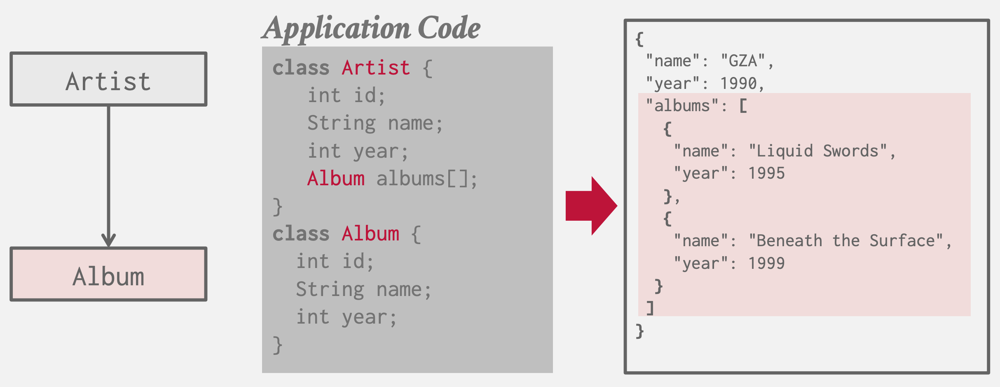
- 이렇게 했을 때의 장점은:
- 구현이 단순해진다. 복잡하게 scheme 짜고 할 필요 없이 그냥 application code 에서의 객체를 DB 에 던져버리면 되기 때문에.
- 그리고 Join 연산이 없기 때문에 속도가 더 빠르다.
- 하지만 그럼에도 불구하고 다음과 같은 단점들 때문에 Relational Model 이 일반적으로 더 권장된다.
- Document Model 의 경우에는 아무런 제약조건이 없기 때문에 data integrity 를 보장하기가 어렵다.
- 가령 데이터의 자료형이라던가
- 아니면 sync 가 안맞아 Album 정보에는 artist 로 등록되어 있지만 Artist 정보에는 해당 album 없는 등의 실수가 발생할 수 있는 것.